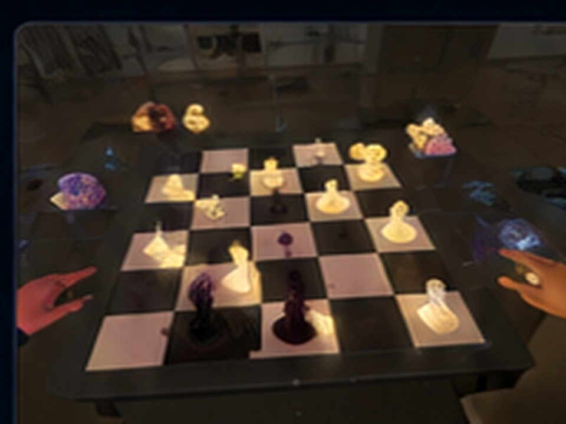

Follow your Hat
Your Hat is visible to the group and gives you a temporary behaviour rule during gameplay.
NON-SPOILER PARTICIPANT GUIDE / SHARED ROOM
De-buff Party is a co-located mixed reality social deduction and collaboration experience. Select a visible Hat, receive a private Role Card, gather partial clues, solve shared MR challenges, discuss suspicious behaviour, vote privately, and review the outcome.
Visible behaviour rules.
Your hidden social objective.
Information to interpret and share.
This guide intentionally does not show the final Chess arrangement, fixed clue text, hidden win calculations, or role-resolution secrets.
Understand the public rules, keep private information private, and let the social deduction emerge through play.
Your Hat is visible to the group and gives you a temporary behaviour rule during gameplay.
Read your Role Card silently. Do not show it or read the whole instruction aloud before the reveal.
Share, question, compare, or strategically withhold information. No single clue should be treated as the full answer.
Suspicion and playful disagreement are part of the game. Personal attacks or embarrassment are not.
Your Hat is visible to everyone. It gives you a behavioural rule that other players can observe, interpret, and question during the session.
Speak softly and quietly.
Other players can see the Hat, but they do not know whether your behaviour is simply following the rule or is also connected to a hidden objective.
Speak clearly and audibly.
Communicate in a clearly audible voice when speaking. Normal pauses are fine; the rule does not mean you must speak continuously.
Stay near the Whisper player.
Your positioning becomes visible social information. Other players may interpret whether your movement is intentional, accidental, or strategic.
Maintain distance from others.
Keep independent spacing from the group while still participating in the shared activities and discussion.
Each player secretly receives one Role Card with a unique objective. Keep your Role private while you play. Your Hat is visible; your Role is not.
Violate your own Hat rule without being correctly identified.
Gain rewards by violating rules a limited number of times; lose the bonus if detected.
Observe others, support discussion, and identify the hidden roles accurately.
Delay or mislead the group during the puzzle; hold privileged true clues selectively.
You may discuss clues, reasoning, observations, and suspicions, but do not show your Role Card or read the full private instruction aloud before Role Reveal.
The experience moves from identity assignment to exploration, collaboration, social interpretation, private voting, and outcome feedback.
Enter the shared MR room and follow the facilitator's setup and safety instructions.
Choose a visible Hat and remember its behaviour rule.
Receive a hidden social objective. Read it privately.
Interact with bubbles and collect private partial clue information.
Coordinate around a shared MR task while keeping your Hat rule in mind.
Combine partial clues, move pieces, test ideas, and negotiate a shared solution.
Compare evidence, clue claims, observed behaviour, and suspicious decisions.
Vote privately based on your interpretation of the session.
Roles become public and the system provides final outcome feedback.
The activities progressively move from individual exploration to shared manipulation and collaborative reasoning.

Explore the shared space, interact with a bubble, and receive private clue information. Decide what to share, when to share it, and with whom.

Manipulate shared virtual objects toward a common state. Coordinate movement and communication while observing behaviour feedback.

This is not a full chess match. Use partial clues and basic spatial reasoning to infer a valid arrangement. Explain proposed moves, ask whether clues support them, and reach a group decision.
Most clue acquisition happens during Emotion Bubble.
Clues are partial. Do not assume your clue contains the whole solution.
Talk about what your clue means rather than showing another player your private UI.
Ask whether another clue supports or contradicts a proposed Chess move.
Use language such as “My clue suggests…” rather than immediately announcing a final square.
The game works because visible behavioural rules and hidden objectives overlap. What you see is not necessarily the full reason behind what another player is doing.
Follow your visible Hat while pursuing your hidden objective.
Interpret behaviour and form hypotheses about intention.
Discuss, exchange clues, question, defend, and challenge.
Make a private judgement about the hidden roles.
Reveal roles, calculate rewards, and reflect on the experience.
The endgame is about interpretation rather than simply solving the physical puzzle.
Compare clue claims, object movement, voice/distance behaviour, unusual choices, and moments of possible rule-breaking.
Vote privately for the player who best matches the suspicious behaviour or hidden-role pattern you inferred.
Hidden roles become public. The outcome screen closes the session and lets the group see earlier actions in a new light.
Visible identity + behaviour rule.
Private social objective.
Partial information. Share carefully.
Warm-up shared MR coordination.
Main group reasoning task. No answer spoilers.
Private judgement after discussion.
READY?